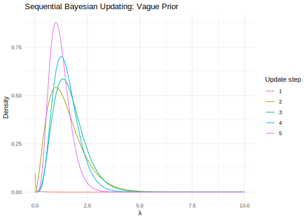

12.5 Tall data problems
In this section, we explore several methods developed to perform Bayesian inference when the sample size is large, particularly when there is a large number of observational units, commonly referred to as tall datasets.
Bayesian inference in such settings is computationally demanding because each iteration of an MCMC algorithm requires evaluating the likelihood function over all \(N\) observations. For large \(N\), this renders standard MCMC methods prohibitively expensive. Recent efforts have focused on developing scalable Monte Carlo algorithms that significantly reduce the computational cost compared to standard approaches. One alternative is to use Variational Bayes (see Chapter 14); however, it can be challenging to implement and may exhibit limitations in uncertainty quantification, particularly for the joint posterior distribution. Another alternative is the Integrated Nested Laplace Approximation (INLA, see Chapter 14); however, its computational cost grows exponentially with the dimension of the parameter space.
In scenarios where observations are assumed to be independent, two main frameworks have been proposed to scale MCMC algorithms: divide-and-conquer approaches and subsampling-based algorithms. Divide-and-conquer methods partition the dataset into disjoint subsets, run MCMC independently on each batch to obtain subposteriors, and then combine them to approximate the full posterior distribution. Subsampling-based algorithms, on the other hand, aim to reduce the number of data points used to evaluate the likelihood at each iteration, often relying on pseudo-marginal MCMC methods (Andrieu and Roberts 2009). The key idea of pseudo-marginal MCMC is to augment the model with latent variables such that the sample average of the likelihood, computed over draws from these latent variables, provides an unbiased estimator of the marginal likelihood. This approach is particularly valuable when the marginal likelihood is not available in closed form. Moreover, the same principles can be adapted to reduce the computational burden of evaluating the log-likelihood. For an excellent review of divide-and-conquer and subsampling-based approaches, see (Bardenet, Doucet, and Holmes 2017).
12.5.1 Divide-and-conquer methods
In divide-and-conquer methods, the main idea is to partition the dataset and distribute the subsets across multiple computing machines/cores. An independent MCMC algorithm is then executed on each subset to obtain a corresponding subposterior distribution. The central challenge lies in accurately and efficiently combining these subposteriors into a single approximation of the full posterior distribution.
Several approaches have been proposed to address this issue. For instance, Huang and Gelman (2005), Steven L. Scott et al. (2016), Rendell et al. (2020) and Steven L. Scott et al. (2022) introduce the Consensus Monte Carlo algorithm; Wang and Dunson (2013) develop a method based on the Weierstrass sampler for parallelizing MCMC; Minsker (2015) propose using the geometric median of posterior distributions; and Wu and Robert (2017) suggest combining rescaled subposteriors.
In divide-and-conquer methods, the dataset is partitioned into \(B\) disjoint batches \(\mathbf{y}_1, \mathbf{y}_2, \dots, \mathbf{y}_B\), and the posterior is rewritten using the identity:
\[ \pi(\boldsymbol{\theta} \mid \mathbf{y}) \propto \prod_{b=1}^B \pi(\boldsymbol{\theta})^{1/B} p(\mathbf{y}_b \mid \boldsymbol{\theta}), \]
which implies that the full posterior is proportional to the product of appropriately rescaled subposteriors.
Consensus Monte Carlo (CMC) operates by running separate Monte Carlo algorithms on each subset in parallel, and then averaging the resulting posterior draws. Specifically, given samples \(\boldsymbol{\theta}_b^{(s)}\), for \(b = 1, 2, \dots, B\) and \(s = 1, 2, \dots, S\), obtained independently from each batch \(\mathbf{y}_b\), the \(s\)-th draw from the consensus posterior is computed as:
\[ \boldsymbol{\theta}^{(s)} = \left( \sum_{b=1}^B \mathbf{w}_b \right)^{-1} \sum_{b=1}^B \mathbf{w}_b \boldsymbol{\theta}_b^{(s)}, \]
where the optimal weight is the inverse covariance matrix of the subposterior, i.e., \(\mathbf{w}_b = \operatorname{Var}^{-1}(\boldsymbol{\theta} \mid \mathbf{y}_b)\). In practice, one may use the marginal variances of each parameter to simplify the computation, which can still yield good performance.
When each subposterior \(\pi_b(\boldsymbol{\theta} \mid \mathbf{y}_b)\) is Gaussian, the full posterior \(\pi(\boldsymbol{\theta} \mid \mathbf{y})\) is also Gaussian and can be recovered exactly by combining the subposteriors using simple rules based on their means and covariances (Steven L. Scott et al. 2016; Steven L. Scott et al. 2022). In the non-Gaussian case, standard asymptotic results in Bayesian inference (see Chapter 1) imply that the posterior distributions converge to a Gaussian distribution as the batch size increases.
Alternative merging procedures that are more robust to non-Gaussianity have also been proposed (Neiswanger, Wang, and Xing 2013; Minsker et al. 2017); however, it remains difficult to quantify the approximation error in these approaches. Moreover, this procedure is limited to continuous parameter spaces and may exhibit small-sample bias; that is, when the dataset is divided into small batches, the subposterior distributions may be biased. In such cases, jackknife bias corrections are recommended to reduce the overall approximation error.
In particular, we perform CMC using the following Algorithm (Steven L. Scott et al. 2016). Next, we compute the CMC posterior repeatedly, each time leaving out one of the \(B\) subsets. Let \(\pi_{-b}(\boldsymbol{\theta} \mid \mathbf{y})\) denote the resulting posterior when subset \(b\) is excluded. The average of these leave-one-out posteriors is denoted by:
\[ \bar{\pi}_{-b}(\boldsymbol{\theta} \mid \mathbf{y}) = \frac{1}{B} \sum_{b=1}^B \pi_{-b}(\boldsymbol{\theta} \mid \mathbf{y}). \]
Then, the jackknife bias-corrected posterior is given by:
\[ \pi_{\text{jk}}(\boldsymbol{\theta} \mid \mathbf{y}) = B \cdot \pi_{\text{CMC}}(\boldsymbol{\theta} \mid \mathbf{y}) - (B - 1) \cdot \bar{\pi}_{-b}(\boldsymbol{\theta} \mid \mathbf{y}), \]
where \(\pi_{\text{CMC}}(\boldsymbol{\theta} \mid \mathbf{y})\) is the original CMC posterior based on all \(B\) subsets.
Algorithm: Consensus Monte Carlo
Divide the dataset into \(B\) disjoint batches \(\mathbf{y}_1, \mathbf{y}_2, \dots, \mathbf{y}_B\)
Run \(B\) separate MCMC algorithms to sample \(\boldsymbol{\theta}_b^{(s)}\sim \pi(\boldsymbol{\theta}\mid \mathbf{y}_b)\), \(b=1,2,\dots,B\), and \(s=1,2,\dots,S\) using the prior distribution \(\pi(\boldsymbol{\theta})^{1/B}\)
Combine the posterior draws using \(\boldsymbol{\theta}^{(s)}=\left(\sum_{b=1}^B\mathbf{w}_b\right)^{-1} \sum_{b=1}^B\mathbf{w}_b \boldsymbol{\theta}^{(s)}_b\) using \(\mathbf{w}_b = \operatorname{Var}^{-1}(\boldsymbol{\theta} \mid \mathbf{y}_b)\)
The main difficulty is how to effectively merge the subposterior distributions, especially when their supports are not well-aligned. This misalignment can lead to poor scalability with an increasing number of batches. Moreover, most theoretical guarantees for these methods are asymptotic in the size of each batch, which may limit their performance in practice (Bardenet, Doucet, and Holmes 2017).
12.5.2 Subsampling-based algorithms
An alternative to divide-and-conquer methods is to avoid evaluating the likelihood over all observations, which requires \(O(N)\) operations. Instead, the likelihood is approximated using a smaller subset of observations, \(n \ll N\), in order to reduce the computational burden of the algorithm. The starting point is the log-likelihood function for \(N\) independent observations: \[ \log p(\mathbf{y} \mid \boldsymbol{\theta}) = \sum_{i=1}^N \log p(y_i \mid \boldsymbol{\theta}). \] The literature has focused on the log-likelihood because it is a sum over independent contributions, which is analogous to the problem of estimating a population total.
A class of subsampling methods relies on estimating the marginal likelihood via the pseudo-marginal approach. Examples include the confidence sampler (Bardenet, Doucet, and Holmes 2014), the Firefly Monte Carlo algorithm (Maclaurin and Adams 2015), whose relationship to subsampling MCMC is formally established in Bardenet, Doucet, and Holmes (2017), and approaches using data-expanded and parameter-expanded control variates (Quiroz et al. 2019).
The intuition behind the pseudo-marginal method is straightforward: introduce a set of auxiliary random variables \(\mathbf{z} \sim p(\mathbf{z})\), such that the marginal likelihood can be written as an expectation with respect to \(\mathbf{z}\): \[ \mathbb{E}_{\mathbf{z}}[p(\mathbf{y} \mid \boldsymbol{\theta}, \mathbf{z})] = \int_{\mathcal{Z}} p(\mathbf{y} \mid \boldsymbol{\theta}, \mathbf{z}) \, p(\mathbf{z}) \, d\mathbf{z} = p(\mathbf{y} \mid \boldsymbol{\theta}). \] This implies that \[ \hat{p}(\mathbf{y} \mid \boldsymbol{\theta}) = \frac{1}{S} \sum_{s=1}^S p(\mathbf{y} \mid \boldsymbol{\theta}, \mathbf{z}^{(s)}) \] is an unbiased estimator of the marginal likelihood, \(\mathbf{z}^{(s)} \sim p(\mathbf{z})\).
As a result, the pseudo-marginal method enables exact simulation-based inference for \(p(\mathbf{y} \mid \boldsymbol{\theta})\) in settings where the likelihood cannot be evaluated analytically (Andrieu and Roberts 2009), for instance, in non-linear random effects models (see also approximate methods such as approximate Bayesian computation and Bayesian synthetic likelihood in Chapter 14). Andrieu and Roberts (2009) show that replacing the likelihood with an unbiased and positive estimator within the Metropolis–Hastings (MH) algorithm yields samples from the correct posterior distribution.
The pseudo-marginal likelihood approach can also be applied in settings where the sample size is so large that evaluating the full likelihood at each iteration of an MCMC algorithm becomes computationally prohibitive. In such cases, the likelihood can be approximated using a small subset of observations, \(n \ll N\). The choice of the subset size \(n\) is particularly important, as it directly affects the variance of the likelihood estimator, which in turn is critical to ensuring an efficient Metropolis–Hastings (MH) algorithm.
In particular, a likelihood estimator with high variance may result in an accepted draw that overestimates the likelihood. As a consequence, subsequent proposals are unlikely to be accepted, causing the algorithm to become stuck and leading to a very low acceptance rate. Therefore, the choice of \(n\) determines the computational efficiency of the algorithm: a small \(n\) increases the estimator’s variance, which reduces the acceptance rate, whereas a large \(n\) increases the number of likelihood evaluations per iteration.
Quiroz et al. (2018) recommend targeting a likelihood estimator variance between 1 and 3.3 to optimize computational efficiency, as supported by the findings of Pitt et al. (2012).
Let \(\ell_i(y_i \mid \boldsymbol{\theta}) = \log p(y_i \mid \boldsymbol{\theta})\) denote the contribution of the \(i\)-th observation to the log-likelihood, and let \(z_1, \dots, z_N\) be latent binary variables such that \(z_i = 1\) indicates that \(y_i\) is included in a subsample of size \(n\), selected without replacement. Then, an unbiased estimator of the log-likelihood is given by \[ \hat{\ell}(\mathbf{y} \mid \boldsymbol{\theta}) = \frac{N}{n} \sum_{i=1}^N \ell_i(y_i \mid \boldsymbol{\theta}) z_i. \]
However, note that what we require is an unbiased estimator of the likelihood, not the log-likelihood. Consequently, a bias correction is needed: \[ \hat{p}(\mathbf{y} \mid \boldsymbol{\theta}) = \exp\left\{ \hat{\ell}(\mathbf{y} \mid \boldsymbol{\theta}) - \frac{1}{2} \sigma^2_{\hat{\ell}}(\boldsymbol{\theta}) \right\}, \] where \(\sigma^2_{\hat{\ell}}(\boldsymbol{\theta})\) denotes the variance of \(\hat{\ell}(\mathbf{y} \mid \boldsymbol{\theta})\) (Ceperley and Dewing 1999). This correction is exact if \(\sigma^2_{\hat{\ell}}(\boldsymbol{\theta})\) is known and \(\hat{\ell}(\mathbf{y} \mid \boldsymbol{\theta})\) follows a normal distribution.
Given the importance of controlling the variance of the log-likelihood estimator in subsampling methods, and the limitations of simple random sampling in achieving low variability, Quiroz et al. (2019) propose a highly efficient, unbiased estimator of the log-likelihood based on control variates, specifically through data-expanded and parameter-expanded control variates.
The key idea is to construct a function \(q_i(\boldsymbol{\theta})\) that is highly correlated with the log-likelihood contribution \(\ell_i(y_i \mid \boldsymbol{\theta})\), thereby stabilizing the log-likelihood estimator. In particular, Quiroz et al. (2019) introduce a difference estimator of the form: \[ \hat{\ell}_{\mathrm{DE}}(\mathbf{y} \mid \boldsymbol{\theta}, \mathbf{z}) = \sum_{i=1}^N q_i(\boldsymbol{\theta}) + \frac{N}{n} \sum_{i: z_i = 1} \left( \ell_i(y_i \mid \boldsymbol{\theta}) - q_i(\boldsymbol{\theta}) \right). \] This estimator \(\hat{\ell}_{\mathrm{DE}}(\mathbf{y} \mid \boldsymbol{\theta}, \mathbf{z})\) is unbiased for the full log-likelihood \(\log p(\mathbf{y} \mid \boldsymbol{\theta})\).
Quiroz et al. (2019) propose constructing \(q_i(\boldsymbol{\theta})\) using a second-order Taylor expansion of the log-likelihood around a central value of \(\boldsymbol{\theta}\), such as the mode. An alternative approach is to perform a second-order Taylor expansion around the nearest centroid of each observation, where the centroids are obtained from a pre-clustering of the data.
The first approach can perform poorly when the current draw \(\boldsymbol{\theta}\) is far from the central expansion point, leading to inaccurate approximations. The second approach encounters difficulties in high-dimensional settings due to the curse of dimensionality: many observations will be far from their assigned centroid. To address these issues, the authors propose an adaptive strategy: initialize the algorithm using data-expanded control variates, and switch to parameter-expanded control variates once the sampler reaches a region closer to the center of the parameter space.
It is important to note that this strategy targets an approximation to the posterior distribution, due to the small bias introduced by the difference estimator. However, this bias diminishes rapidly and has a negligible impact on the quality of the posterior inference.
Once a good estimator of the log-likelihood is obtained, meaning it has low variance, the likelihood can be recovered using the appropriate bias correction. This corrected likelihood estimator is then used within the acceptance probability of the Metropolis–Hastings algorithm (see Section 4.1.2), resulting in the so-called pseudo-marginal Metropolis–Hastings (PMMH) method. This strategy significantly reduces computational cost in tall data settings.
Another class of subsampling methods, which does not rely on the pseudo-marginal likelihood, consists of stochastic gradient MCMC algorithms. These methods are based on ideas from stochastic gradient descent (Robbins and Monro 1951) and Langevin diffusion-based stochastic differential equations.
The starting point is the unnormalized posterior distribution: \[\begin{align*} \pi(\boldsymbol{\theta} \mid \mathbf{y}) \propto \pi(\boldsymbol{\theta}) \prod_{i=1}^{N} p(y_i \mid \boldsymbol{\theta}) & = \exp\left\{ \sum_{i=1}^N \left[ \frac{1}{N} \log \pi(\boldsymbol{\theta}) + \log p(y_i \mid \boldsymbol{\theta}) \right] \right\}\\ & = \exp\left\{ -\sum_{i=1}^N U_i(\boldsymbol{\theta}) \right\}\\ & = \exp\left\{ -U(\boldsymbol{\theta}) \right\}, \end{align*}\] where \(\boldsymbol{\theta} \in \mathbb{R}^K\), \(U_i(\boldsymbol{\theta}) = -\frac{1}{N} \log \pi(\boldsymbol{\theta}) - \log p(y_i \mid \boldsymbol{\theta})\), and \(U(\boldsymbol{\theta}) = \sum_{i=1}^N U_i(\boldsymbol{\theta})\) is assumed to be continuous and differentiable almost everywhere.
The advantage of this formulation is that, under mild regularity conditions (Roberts and Tweedie 1996), the Langevin diffusion process \[ d\boldsymbol{\theta}(s) = -\frac{1}{2} \nabla U(\boldsymbol{\theta}(s))\,ds + d\mathbf{B}_s, \] has \(\pi(\boldsymbol{\theta} \mid \mathbf{y})\) as its stationary distribution. Here, \(\nabla U(\boldsymbol{\theta}(s))\) is the drift term, and \(\mathbf{B}_s\) is a \(K\)-dimensional Brownian motion.3
Using an Euler-Maruyama discretization of the Langevin diffusion gives a proposal draw from the posterior: \[ \boldsymbol{\theta}^{(c)} = \boldsymbol{\theta}^{(s)} - \frac{\epsilon}{2} \nabla U(\boldsymbol{\theta}^{(s)}) + \boldsymbol{\psi}, \] where \(\boldsymbol{\psi} \sim \mathcal{N}(\mathbf{0}, \epsilon \mathbf{I}_K)\) and \(\epsilon > 0\) is a suitably chosen step size (learning rate). This proposal is used within a Metropolis–Hastings algorithm (see Section 4.1.2) to correct for the discretization error introduced by the Euler approximation. This method is known as the Metropolis-adjusted Langevin algorithm (MALA) (Roberts and Tweedie 1996).
A simpler variant, known as the unadjusted Langevin algorithm (ULA), omits the acceptance step. As a result, ULA produces a biased approximation of the posterior distribution. However, a major computational bottleneck in both MALA and ULA is the requirement to evaluate the full gradient \(\nabla U(\boldsymbol{\theta}) = \sum_{i=1}^N \nabla U_i(\boldsymbol{\theta})\) at every iteration, which becomes computationally prohibitive when \(N\) is large.
To overcome this limitation, Welling and Teh (2011) proposed the Stochastic Gradient Langevin Dynamics (SGLD), which replaces the full gradient with an unbiased estimate computed using a mini-batch of data. Given a random sample of size \(n \ll N\), the stochastic gradient estimate at iteration \(s\) is: \[\begin{equation} \hat{\nabla} U(\boldsymbol{\theta})^{(n)} = \frac{N}{n} \sum_{i \in \mathcal{S}_n} \nabla U_i(\boldsymbol{\theta}), \tag{12.1} \end{equation}\] where \(\mathcal{S}_n \subset \{1, 2, \dots, N\}\) is a randomly selected subset of size \(n\), sampled without replacement.
Therefore, \[ \boldsymbol{\theta}^{(s+1)} = \boldsymbol{\theta}^{(s)} - \frac{\epsilon_s}{2} \hat{\nabla} U(\boldsymbol{\theta}^{(s)})^{(n)} + \boldsymbol{\psi}_s, \] such that \(\sum_{s=1}^{\infty}\epsilon_s = \infty\) and \(\sum_{s=1}^{\infty}\epsilon_s^2 < \infty\). These conditions guarantee almost sure convergence: the former ensures continued exploration of the parameter space (no premature convergence), and the latter ensures that the cumulative noise remains bounded.
Teh, Thiery, and Vollmer (2016) formally show that, under verifiable assumptions, the SGLD algorithm is consistent. That is, given a test function \(\phi(\boldsymbol{\theta}): \mathbb{R}^K \rightarrow \mathbb{R}\), \[ \lim_{S \rightarrow \infty} \frac{\epsilon_1 \phi(\boldsymbol{\theta}_1) + \epsilon_2 \phi(\boldsymbol{\theta}_2) + \dots + \epsilon_S \phi(\boldsymbol{\theta}_S)}{\sum_{s=1}^S \epsilon_s} = \int_{\mathbb{R}^K} \phi(\boldsymbol{\theta}) \pi(\boldsymbol{\theta}) \, d\boldsymbol{\theta}. \]
Moreover, the algorithm satisfies a central limit theorem: \(\lim_{S \rightarrow \infty} \pi_S(\phi(\boldsymbol{\theta})) = \pi(\phi(\boldsymbol{\theta}))\), and its asymptotic bias–variance decomposition is characterized by a functional of \(\epsilon_s\), such that the optimal step size that minimizes the asymptotic mean squared error is proportional to \(s^{-1/3}\). In the common practice of using a constant step size, it has been shown that the optimal choice to minimize the asymptotic mean squared error is of order \(S^{-1/3}\) (Vollmer, Zygalakis, and Teh 2016). However, we recommend tuning this parameter based on the specific application, guided by the theoretical results presented here.
Importantly, this iterative process does not require the computation of acceptance probabilities, which significantly reduces the computational burden. Empirical evidence suggests that SGLD often outperforms the Metropolis–Hastings algorithm when applied to large datasets under a fixed computational budget (Li, Ahn, and Welling 2016).
The following Algorithm summarizes the SGLD procedure (Nemeth and Fearnhead 2021).
Algorithm: Stochastic gradient Langevin dynamic
Set \(\boldsymbol{\theta}^{(0)}\) and the step size schedule \(\epsilon_s\)
For \(s = 1, \dots, S\):
- Draw \(\mathcal{S}_n\) of size \(n\) from \(i=\left\{1,2,\dots,N\right\}\) without replacement
- Calculate \(\hat{\nabla} U(\boldsymbol{\theta})^{(n)}\) using \(\hat{\nabla} U(\boldsymbol{\theta})^{(n)} = \frac{N}{n} \sum_{i \in \mathcal{S}_n} \nabla U_i(\boldsymbol{\theta})\)
- Draw \(\boldsymbol{\psi}_s\sim N(\mathbf{0},\epsilon_s\mathbf{I}_K)\)
- Update \(\boldsymbol{\theta}^{(s+1)}\leftarrow \boldsymbol{\theta}^{(s)} -\frac{\epsilon_s}{2}\hat{\nabla} U(\boldsymbol{\theta}^{(s)})^{(n)}+\boldsymbol{\psi}_s\)
End for
A critical component of the SGLD algorithm is the estimation of the stochastic gradient (Equation (12.1)), particularly because high variability in this estimator can lead to algorithmic instability, a challenge also encountered in pseudo-marginal methods, as described previously. To mitigate this issue, the literature also employs control variates to reduce the variance of the estimator. The core idea is to construct a simple function \(u_i(\boldsymbol{\theta})\) that is highly correlated with \(\nabla U_i(\boldsymbol{\theta})\) and has a known expectation. This correlation allows the fluctuations in \(u_i(\boldsymbol{\theta})\) to “cancel out” some of the noise in \(\nabla U_i(\boldsymbol{\theta})\), thereby stabilizing the stochastic gradient estimates. Specifically,
\[ \sum_{i=1}^N \nabla U_i(\boldsymbol{\theta}) = \sum_{i=1}^N u_i(\boldsymbol{\theta}) + \sum_{i=1}^N \left( \nabla U_i(\boldsymbol{\theta}) - u_i(\boldsymbol{\theta}) \right), \]
which leads to the following unbiased estimator:
\[ \sum_{i=1}^N u_i(\boldsymbol{\theta}) + \frac{N}{n} \sum_{i \in \mathcal{S}_n} \left( \nabla U_i(\boldsymbol{\theta}) - u_i(\boldsymbol{\theta}) \right). \]
To construct effective control variates, one common strategy is to first approximate the posterior mode \(\hat{\boldsymbol{\theta}}\) using stochastic gradient descent (SGD), which serves as the initialization point for SGLD Algorithm. SGD proceeds via a stochastic approximation of the gradient:
\[ \boldsymbol{\theta}^{(s+1)} = \boldsymbol{\theta}^{(s)} - \epsilon_s \frac{1}{n} \sum_{i \in \mathcal{S}_n} \nabla U_i(\boldsymbol{\theta}^{(s)}). \]
This approximation introduces stochasticity into the updates but significantly reduces computational cost.
Two commonly used learning rate (or step size) schedules are \(\epsilon_s = s^{-\kappa}\) and \(\epsilon_s = \epsilon_0 / (1 + s / \tau)^{\kappa}\), where \(\epsilon_0\) is the initial learning rate, \(\tau\) is a stability constant that slows down early decay (larger values lead to more stable early behavior), and \(\kappa \in (0.5, 1]\) controls the long-run decay rate. If \(\kappa\) is too large, the learning rate decays too quickly and the algorithm may stagnate. Conversely, if \(\kappa\) is too small, the algorithm may remain unstable or fail to converge.
An important distinction to note is that SGLD operates with gradient sums, while SGD typically uses averages. This distinction affects how step sizes and noise scaling should be interpreted in practice.
After convergence, we obtain a reliable estimate of the posterior mode \(\hat{\boldsymbol{\theta}}\). Based on this, we define the control variate as \(u_i(\boldsymbol{\theta}) = \nabla U_i(\hat{\boldsymbol{\theta}})\). The resulting control variate estimator of the gradient is:
\[ \hat{\nabla}_{\text{cv}} U(\boldsymbol{\theta}) = \sum_{i=1}^N \nabla U_i(\hat{\boldsymbol{\theta}}) + \frac{N}{n} \sum_{i \in \mathcal{S}_n} \left( \nabla U_i(\boldsymbol{\theta}) - \nabla U_i(\hat{\boldsymbol{\theta}}) \right). \]
Example: Simulation exercise to study the performance of CMC and SGLD
In this example, we follow the logistic regression simulation setup introduced by Nemeth and Fearnhead (2021):
\[ P(y_i = 1 \mid \boldsymbol{\beta}, \mathbf{x}_i) = \frac{\exp\left\{\mathbf{x}_i^{\top} \boldsymbol{\beta}\right\}}{1 + \exp\left\{\mathbf{x}_i^{\top} \boldsymbol{\beta}\right\}}, \]
with log-likelihood function given by:
\[ \log p(\mathbf{y} \mid \boldsymbol{\beta}, \mathbf{x}) = \sum_{i=1}^N y_i \left( \mathbf{x}_i^{\top} \boldsymbol{\beta} - \log \left(1 + \exp\left\{\mathbf{x}_i^{\top} \boldsymbol{\beta}\right\} \right) \right) + (1 - y_i) \left( - \log \left(1 + \exp\left\{\mathbf{x}_i^{\top} \boldsymbol{\beta}\right\} \right) \right), \]
which simplifies to:
\[ \log p(\mathbf{y} \mid \boldsymbol{\beta}, \mathbf{x}) = \sum_{i=1}^N y_i \mathbf{x}_i^{\top} \boldsymbol{\beta} - \log \left(1 + \exp\left\{\mathbf{x}_i^{\top} \boldsymbol{\beta}\right\} \right). \]
This implies that the gradient vector is:
\[ \nabla \log p(\mathbf{y} \mid \boldsymbol{\beta}, \mathbf{x}) = \sum_{i=1}^N \left(y_i - \frac{\exp\left\{\mathbf{x}_i^{\top} \boldsymbol{\beta}\right\}}{1+\exp\left\{\mathbf{x}_i^{\top} \boldsymbol{\beta}\right\}}\right)\mathbf{x}_i. \]
We assume a prior distribution for \(\boldsymbol{\beta} \sim \mathcal{N}(\mathbf{0}, 10 \mathbf{I}_K)\), leading to the log-prior:
\[ \log \pi(\boldsymbol{\beta}) = -\frac{K}{2} \log(2\pi) - \frac{1}{2} \log\left( \lvert 10 \mathbf{I}_K \rvert \right) - \frac{1}{2} \boldsymbol{\beta}^{\top} (10^{-1} \mathbf{I}_K) \boldsymbol{\beta}. \]
The gradient of the log-prior is:
\[ \nabla \log \pi(\boldsymbol{\beta}) = -\frac{1}{10}\boldsymbol{\beta}. \]
Also note that:
\[\begin{align*} \pi(\boldsymbol{\beta})^{1/B} & \propto \left\{\exp\left(-\frac{1}{2 \cdot 10} \boldsymbol{\beta}^\top \boldsymbol{\beta}\right)\right\}^{1/B}\\ & = \exp\left(-\frac{1}{2 \cdot 10 \cdot B} \boldsymbol{\beta}^\top \boldsymbol{\beta} \right). \end{align*}\]
This implies that, when implementing CMC, the prior variance must be scaled by the number of batches \(B\). That is, each subposterior should use a prior with variance \(10 \cdot B\) so that the product of the \(B\) subposteriors reconstructs the correct full posterior.
We set \(K = 10\), \(\boldsymbol{\beta} = 0.5 \cdot \mathbf{i}_K\), and \(N = 10^5\). The covariates \(\mathbf{x}_i \sim \mathcal{N}(\mathbf{0}, \boldsymbol{\Sigma})\), where the covariance matrix \(\boldsymbol{\Sigma}^{(i,j)} = U[-\rho, \rho]^{|i-j|}\) with \(\rho = 0.4\), and \(\mathbf{i}_K\) denotes a \(K\)-dimensional vector of ones.
We run 2,000 MCMC iterations initialized at zero, and discard the first 500 as burn-in. We scale the regressors beforehand, as this is generally recommended to improve numerical stability and convergence. The following code simulates the model and sets the hyperparameters of the algorithms.
The following code implements SMC Algorithm, running five parallel MCMC chains and combining the resulting subposteriors using three different weighting schemes: equal weights, weights based on marginal variances, and weights based on the full covariance matrices.
By running the code, you can verify that the computational time of the CMC algorithm is lower than that of the Metropolis–Hastings algorithm. The first figure shows the posterior distributions of \(\beta_4\) and \(\beta_5\). We observe that all three weighting schemes perform reasonably well, yielding posterior modes similar to those obtained from the full-data MCMC algorithm. However, the consensus Monte Carlo (CMC) methods produce more dispersed draws, particularly when using equal weights. In contrast, the weighting schemes based on marginal variances and the full covariance matrices yield comparable and more concentrated posterior distributions.
To implement the SGLD algorithm, we set \(n = 0.01 \cdot N\), and the step size to \(1 \times 10^{-4}\). The following code illustrates how to implement the SGLD algorithm.4
In Exercise 8, you are asked to implement the control variate version of SGLD. Begin by running 1,500 SGD iterations to locate the posterior mode. This mode should then be used as the initial value for a subsequent run of 1,000 SGLD iterations.
By running the code, you can verify that the computational time of the SGLD algorithm is lower than that of the Metropolis–Hastings algorithm. The second figure shows the posterior distributions of the fifth location parameter obtained from SGLD and Metropolis–Hastings. We observe that both modes are centered around the true population value; however, the SGLD distribution exhibits greater dispersion compared to the Metropolis–Hastings distribution.
####### CMC and SDLD #######
#### Simulation
rm(list = ls()); set.seed(10101)
library(mvtnorm); library(MCMCpack)## Warning: package 'MCMCpack' was built under R version 4.5.2## Loading required package: coda##
## Attaching package: 'coda'## The following object is masked from 'package:Boom':
##
## thin## ##
## ## Markov Chain Monte Carlo Package (MCMCpack)## ## Copyright (C) 2003-2025 Andrew D. Martin, Kevin M. Quinn, and Jong Hee Park## ##
## ## Support provided by the U.S. National Science Foundation## ## (Grants SES-0350646 and SES-0350613)
## ####
## Attaching package: 'MCMCpack'## The following objects are masked from 'package:Boom':
##
## ddirichlet, dinvgamma, rdirichlet, rinvgamma## Warning: package 'GGally' was built under R version 4.5.1## Registered S3 method overwritten by 'GGally':
## method from
## +.gg ggplot2### Generate correlated covariates
genCovMat <- function(K, rho = 0.4) {
Sigma0 <- matrix(1, K, K)
for (i in 2:K) {
for (j in 1:(i - 1)) {
Sigma0[i, j] <- runif(1, -rho, rho)^(i - j)
}
}
Sigma0 <- Sigma0 * t(Sigma0)
diag(Sigma0) <- 1
return(Sigma0)
}
### Simulate logistic regression data
simulate_logit_data <- function(K, N, beta_true) {
Sigma0 <- genCovMat(K)
X <- rmvnorm(N, mean = rep(0, K), sigma = Sigma0)
linpred <- X %*% beta_true
p <- 1 / (1 + exp(-linpred))
y <- rbinom(N, 1, p)
list(y = y, X = X)
}
### Parameters
K <- 10
N <- 100000
beta_true <- rep(0.5, K)
B <- 5
batch_prop <- 0.01
Prior_prec <- 0.1
n_iter <- 2000
burnin <- 500
stepsize <- 1e-4
k_target1 <- 4 # beta5
k_target2 <- 5 # beta5
ks <- k_target1:k_target2
#--- Simulate data
sim_data <- simulate_logit_data(K, N, beta_true)
y <- sim_data$y
X <- scale(sim_data$X)
### Run MCMCpack logit
df <- as.data.frame(X)
colnames(df) <- paste0("X", 1:K)
df$y <- y
formula <- as.formula(paste("y ~", paste(colnames(df)[1:K], collapse = " + "), "-1"))
posterior_mh <- MCMClogit(formula, data = df, b0 = 0, B0 = Prior_prec,
burnin = burnin, mcmc = n_iter)
full_posterior <- as.matrix(posterior_mh)[, 1:K]
#### CMC
### Split data
batch_ids <- split(1:N, sort(rep(1:B, length.out = N)))
### Function to run MCMC on a subset
mcmc_batch <- function(batch_index, X, y, n_iter, burnin) {
ids <- batch_ids[[batch_index]]
X_b <- X[ids, ]
y_b <- y[ids]
mcmc_out <- MCMClogit(y_b ~ X_b - 1, burnin = burnin, mcmc = n_iter, verbose = 0, b0 = 0, B0 = Prior_prec * (1/B))
return(mcmc_out)
}
### Run in parallel
cl <- makeCluster(B)
clusterExport(cl, c("X", "y", "batch_ids", "n_iter", "burnin", "mcmc_batch", "Prior_prec", "B"))
clusterEvalQ(cl, library(MCMCpack))## [[1]]
## [1] "MCMCpack" "MASS" "coda" "stats" "graphics" "grDevices"
## [7] "utils" "datasets" "methods" "base"
##
## [[2]]
## [1] "MCMCpack" "MASS" "coda" "stats" "graphics" "grDevices"
## [7] "utils" "datasets" "methods" "base"
##
## [[3]]
## [1] "MCMCpack" "MASS" "coda" "stats" "graphics" "grDevices"
## [7] "utils" "datasets" "methods" "base"
##
## [[4]]
## [1] "MCMCpack" "MASS" "coda" "stats" "graphics" "grDevices"
## [7] "utils" "datasets" "methods" "base"
##
## [[5]]
## [1] "MCMCpack" "MASS" "coda" "stats" "graphics" "grDevices"
## [7] "utils" "datasets" "methods" "base"chains <- parLapply(cl, 1:B, function(b) mcmc_batch(b, X, y, n_iter, burnin))
stopCluster(cl)
# Stack MCMC results
posteriors <- lapply(chains, function(x) x[, 1:K])
# CMC posteriors
equal_cmc <- Reduce("+", posteriors) / B
invvar_cmc <- {
vars <- lapply(posteriors, function(x) apply(x, 2, var))
weights <- lapply(vars, function(v) 1 / v)
weights_sum <- Reduce("+", weights)
weighted_post <- Reduce("+", Map(function(x, w) sweep(x, 2, w, "*"), posteriors, weights))
sweep(weighted_post, 2, weights_sum, "/")
}
invmat_cmc <- {
covs <- lapply(posteriors, cov)
invs <- lapply(covs, solve)
weight_sum <- Reduce("+", invs)
consensus <- matrix(NA, nrow = n_iter, ncol = K)
for (i in 1:n_iter) {
draws <- lapply(posteriors, function(p) matrix(p[i, ], ncol = 1))
weighted_sum <- Reduce("+", Map(function(w, d) w %*% d, invs, draws))
consensus[i, ] <- as.vector(solve(weight_sum, weighted_sum))
}
consensus
}
# Combine all for plotting
build_df <- function(mat, method) {
df <- as.data.frame(mat)
colnames(df) <- paste0("x", ks)
df$method <- method
return(df)
}
df_full <- build_df(full_posterior[,ks], "overall")
df_equal <- build_df(equal_cmc[,ks], "equal")
df_scalar <- build_df(invvar_cmc[,ks], "scalar")
df_matrix <- build_df(invmat_cmc[,ks], "matrix")
df_plot <- rbind(df_full, df_matrix, df_scalar, df_equal)
# Plot
ggpairs(df_plot, aes(color = method, fill = method, alpha = 0.4), upper = list(continuous = GGally::wrap("density", alpha = 0.4)), lower = list(continuous = GGally::wrap("density", alpha = 0.4)), diag = list(continuous = GGally::wrap("densityDiag", alpha = 0.4)))## `stat_bin()` using `bins = 30`. Pick better value with `binwidth`.## `stat_bin()` using `bins = 30`. Pick better value with `binwidth`.
#### SGLD
SGLD_step <- function(beta, y, X, stepsize, batch_size, prior_var = 10) {
N <- nrow(X); K <- length(beta)
ids <- sample(1:N, size = batch_size, replace = FALSE)
grad <- rep(0, K)
for (i in ids) {
xi <- X[i, ]
eta <- sum(xi * beta)
pi <- 1 / (1 + exp(-eta))
grad_i <- -(y[i] - pi) * xi
grad <- grad + grad_i
}
grad <- grad / batch_size * N
grad <- grad + beta / prior_var
noise <- rnorm(K, 0, sqrt(stepsize))
beta_new <- beta - 0.5 * stepsize * grad + noise
return(beta_new)
}
### SGLD algorithm
run_SGLD <- function(y, X, stepsize, batch_prop, n_iter, burnin, beta_init = NULL) {
N <- nrow(X)
K <- ncol(X)
batch_size <- round(batch_prop * N)
beta_mat <- matrix(0, n_iter + burnin, K)
beta_mat[1, ] <- if (is.null(beta_init)) rep(0, K) else beta_init
for (s in 2:(n_iter + burnin)) {
beta_mat[s, ] <- SGLD_step(beta_mat[s - 1, ], y, X, stepsize, batch_size)
}
beta_mat[(burnin + 1):(n_iter + burnin), ]
}
### Run SGLD
posterior_sgld <- run_SGLD(y = y, X = X, stepsize, batch_prop, n_iter, burnin)
### Compare densities for beta5
df_plot <- data.frame(
value = c(posterior_sgld[, k_target2], posterior_mh[, k_target2]),
method = rep(c("SGLD", "MCMC"), each = n_iter)
)
ggplot(df_plot, aes(x = value, fill = method, color = method)) + geom_density(alpha = 0.4) + geom_vline(xintercept = beta_true[k_target2], linetype = "dashed", color = "black") + labs(title = expression(paste("Posterior density of ", beta[5])), x = expression(beta[5]), y = "Density") + theme_minimal()
References
A Brownian motion is a continuous-time stochastic process that starts at zero, has independent increments with \(B(s) - B(t) \sim \mathcal{N}(0, s - t)\), and is continuous almost surely but nowhere differentiable.↩︎
There is an R package called sgmcmc, developed by Baker et al. (2019), which provides implementations of various stochastic gradient MCMC methods, including SGLD and SGHMC. However, this package depends on version 1 of the tensorflow package, while the current version is 2, and sgmcmc has not been updated on CRAN. We attempted to install the package from its GitHub repository using the
devtools::install\_github("STOR-i/sgmcmc"command, but encountered compatibility issues due to conflicting TensorFlow versions.↩︎